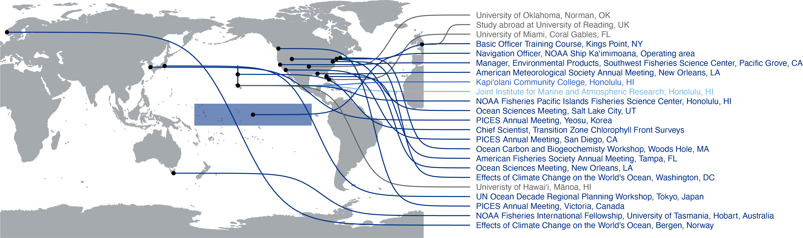

Phoebe Woodworth-Jefcoats, PhD
Kaneohe, HI | phoebe.jefcoats@gmail.com
pwj-dataviz.com | GitHub: pwoodworth-jefcoats | ORCiD: 0000-0001-9353-923X
Professional Summary
I have over 20 years of experience turning large datasets into easy-to-understand graphics and reports, all backed by thorough data analysis. I’m adept at workflows that merge data analysis and communication product development, including incorporating branding standards. Across my work, I focus on using data to provide clarity, tell stories, and inform decisions for audiences ranging from technical experts to casual readers. I embrace collaborative open science and contribute to the development of tools, templates, best practice guides, and hands-on training.
Scroll through my resume and CV below. Mouse over the graphics for more details.
My education and career have taken me to many latitudes:

You can view my full CV here.
Acknowledgments
This interactive CV was a Data Visualization Society mentorship project. Thanks to DVS for making this opportunity possible and to my mentor, Mark Hanley, for suggesting my CV as data to visualize and helping me figure out how to do it. Seeing where I’ve been has helped me figure out where I want to go.
R packages and helpful links are noted throughout the code and comments.